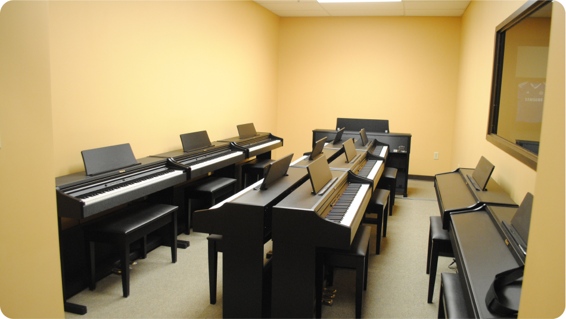
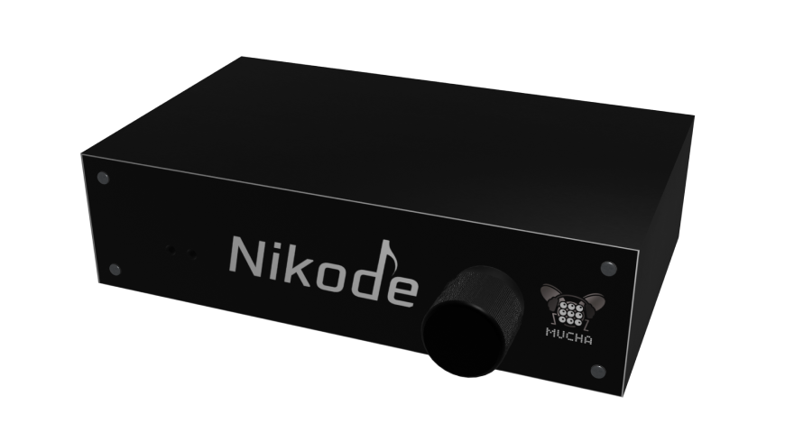
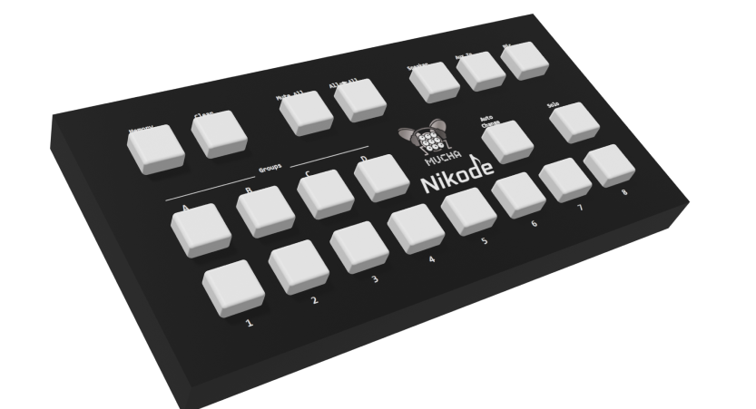
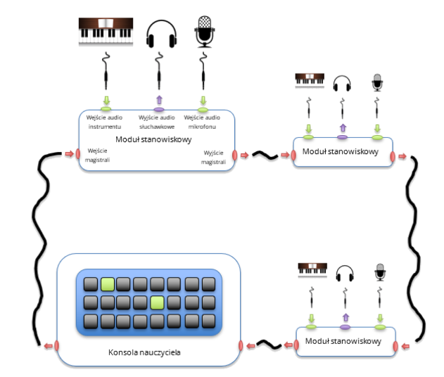

Nauczaj Gry Na Pianinie
Narzędzie do grupowego nauczania gry na pianinie
Zamów
Pytania
Urządzenie

Kontakt
Zamów
Nauczanie grupowe
Co To?
Głównym założeniem grupowego nauczania gry na fortepianie jest tzw. laboratorium fortepianowe (z ang. piano lab). Składa się ono z kilku lub kilkunastu pianin cyfrowych połączonych poprzez sieć słuchawek i mikrofonów. Każdy z uczniów oraz nauczyciel łączą się poprzez specjalny zestaw słuchawkowy, co umożliwia nauczycielowi komunikowanie się z uczniami i sprawdzanie postępów uczniów indywidualnie lub w grupi
Dla Kogo?
Grupowe nauczanie gry na fortepianie przeznaczone jest głównie dla tych, którzy chcą rozpocząć naukę gry na fortepianie lub ją udoskonalić. Jest też dedykowane tym, dla których fortepian jest dodatkowym instrumentem, np. skrzypkom czy wokalistom. Znakomicie nadaje się do nauki gry na fortepianie seniorów, jak i najmłodszych adeptów sztuki pianistycznej
Nauczyciel
Pan Kowalski
“Szanowny P.Nikodemie, b.dziękuję za pierwszą lekcję. Mimo trudności z koncentracją b.mi się podobała i zachęciła do dalszych ćwiczeń. Życzę wiele satysfakcji i miłego weekendu!”
Nauczyciel
Pan Kowalski
“Szanowny P.Nikodemie, b.dziękuję za pierwszą lekcję. Mimo trudności z koncentracją b.mi się podobała i zachęciła do dalszych ćwiczeń. Życzę wiele satysfakcji i miłego weekendu!”
Wsparcie dla 8 stanowisk

Dla Ucznia
Moduł stanowiskowy
Moduły stanowiskowe stanowią serce systemu. Każde stanowisko uczniowskie wyposażone w instrument powinno zostać wyposażone w jeden moduł stanowiskowy. W domyślnym ustawianiu każdy moduł stanowiskowy umożliwia lokalny odsłuch za pomocą podłączonych słuchawek, podłączonego pianina.
Specyfikacja

Dla Nauczyciela
Panel Sterujący
Konsola nauczyciela umożliwia sterowania całym systemem przez osobę prowadzącą zajęcia. Za pomocą zestawu fizycznych przycisków, nauczyciel będzie mógł dowolnie sterować źródłem dźwięku słyszanego przez każdego z uczniów. Będzie mógł wyciszyć wszystkie instrumenty, będzie mógł przekierować dźwięk z własnego modułu stanowiskowego do wszystkich uczniów w celu dokona demonstracji brzmienia danego fragmentu muzycznego
Specyfikacja

Infrastruktura
Schemat
